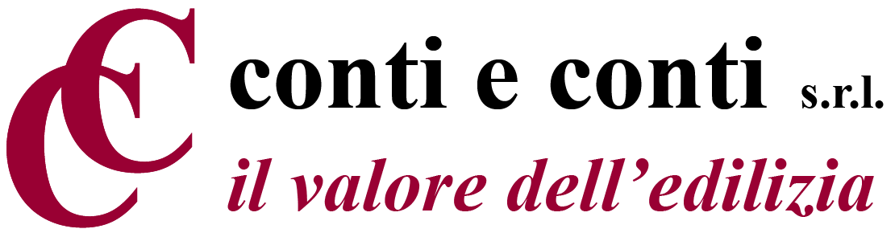

Impresa di costruzioni a Lentate sul Seveso
Dal 1987 costruzioni e ristrutturazioni per privati, aziende e architetti. 40 professionisti diretti, anche per i progetti più complessi.
«Ogni luogo che costruiamo entra nella vita di qualcuno. La nostra responsabilità comincia da qui.»
26 muratori e carpentieri interni: le stesse mani dalle fondazioni alla consegna.
«La qualità di un’opera si riconosce nell’insieme. E si costruisce un dettaglio alla volta.»
8 tecnici di cantiere controllano ogni giorno tracciamenti, quote e sicurezza.
«Ciò che resta nascosto sostiene ciò che vediamo. È lì che la cura fa la differenza.»
I responsabili di cantiere coordinano le opere e verificano qualità, tempi e costi.
«Un progetto diventa un luogo quando accoglie la vita delle persone.»
Dal 1987 un’impresa che risponde direttamente di tempi, prezzi e risultato.
«Tra un’idea e la sua realizzazione ci sono persone capaci di darle forma.»
9 persone in ufficio seguono progetto, preventivi, pratiche e rapporto con il cliente.
Ogni progetto è un nuovo inizio.
Benvenuti in Conti e Conti.
Maestri del proprio mestiere